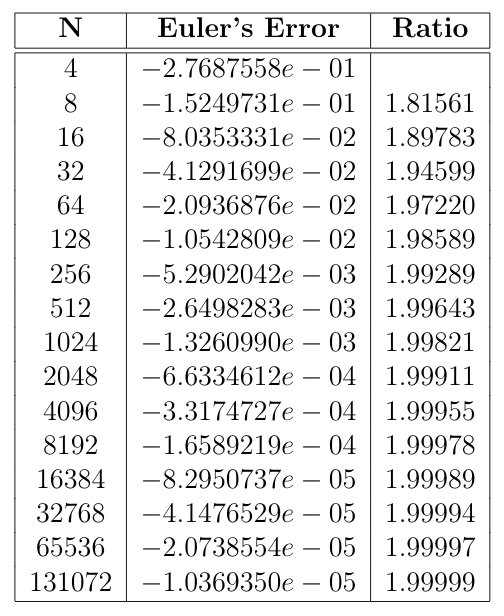
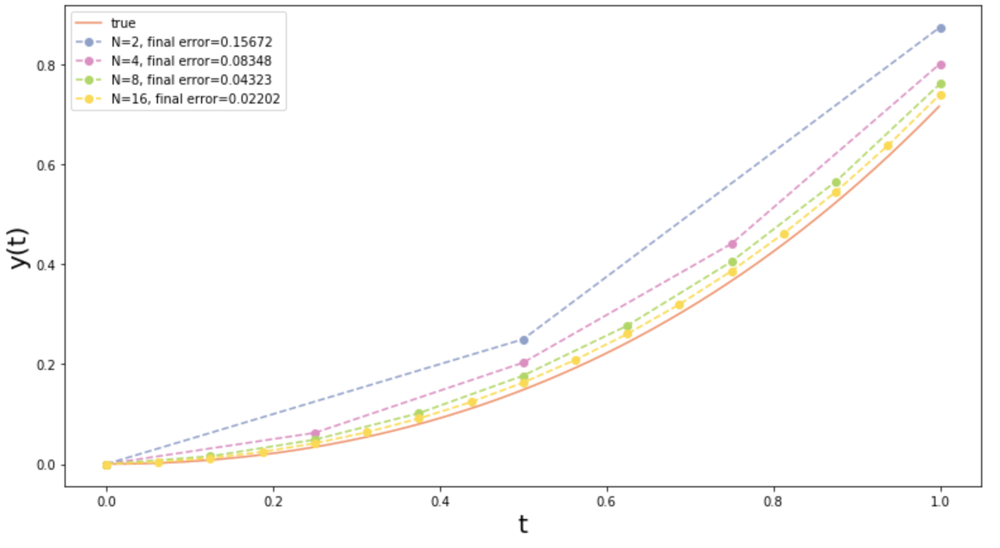

Euler's Method
I am trying to keep this content accessible. Don’t worry if you don’t understand all the theory, because I try to demonstrate examples and build intuition. As always, please feel free to reach out with questions/concerns/corrections.
This turned into a longer post so feel free to skip around using these links.
- Overview
- Theory
- Demo
This post was inspired by the content I am covering currently in my Numerical Analysis course taught by Dr. David Bosley at the University of Colorado. This has been one of my favorite math courses as it combines theory and practice in a very intuitive way. The central goals in this field are creating good numerical estimates of values that are difficult or impossible to find analytically and understanding the error of the estimates. The following analysis is of Euler’s Method for integrating Ordinary Differential Equations (ODEs). ODEs are equations that relate an independent variable and its derivatives, and often come up in engineering and scientific applications. The problem is that most ODEs are impossible to solve algebraically, and indeed the techniques taught in ODEs courses only apply to a small subset of problems, so we must often turn to numerical approximation to get solutions. Euler’s method is the simplest way of doing so, and has a relatively high error rate (which we will derive!), but it is very helpful to develop an intuition about these techniques before moving on to more accurate methods.
Context
We will consider the following class of Initial Value Problems (IVPs) \[ y’ = f(t, y), \quad a \leq t \leq b,\quad y(a) = \alpha. \] Intuitively this means that the derivative of \(y\) with respect to \(t\) is a function of both \(y\) and \(t\), and we define the domain of \(t\) as the closed interval \([a, \;b]\). With the constraint \(y(a)=\alpha\) we now have a place to start and the goal will be to find the value of \(y(b)\).
Example problem
To demonstrate we will use an IVP that we can solve exactly, and use this true value to measure how accurate our approximations are. Consider the following IVP, \[ y’ = y + t, \quad 0 \leq t \leq 1, \quad y(0) = 0. \] Remember we are trying to find a function \(y(t)\) such that this above equation is satisfied. Since this is a linear ODE, we can find the exact solution as \(y(t) = e^t -t -1\). If you are curious how this exact solution is calculated see Paul’s Online Math Notes. Now let’s check to make sure this solution works. We can do this by plugging into our original ODE and making sure the equation is true. First we expand the left hand side of the equation, \[ \begin{align} y’ &= \frac{d}{dt} [e^t -t-1]\newline &= e^t - 1. \end{align} \]
Now we can expand the right hand side, \[ \begin{align} y + t &= e^t - t - 1 + t \newline &= e^t - 1. \end{align} \] They match! So now we know this is the solution to the ODE and can calculate the value at \(b=1\), \[ \begin{align} y(1) &= e - 1 - 1 \newline &= e - 2 \newline &\approx 0.7182818284. \end{align} \]
This is the true value of the solution at \(b=1\), so we will use this value to calculate how far our approximations are from the truth. Now we are going to go through the derivation of Euler’s method and the associated error bound, so feel free to jump to the implementation if you prefer to skip the theory (but it is cool so you should stick around).
Derivation of Euler’s Method
We begin by breaking our interval into a number of “mesh points”. This will allow us to approximate the solution at a bunch of points in between \(a\) and \(b\) and thus get a more accurate approximate solution at \(b\). Let \(N\) be the number of mesh points we want to use. Then \(h = (b-a)/N\) is the distance between each point, and the values at each mesh point are \(t_j = a + jh\) for \(j = 0, 1, … , N\). For example, with \(a=0, \; b=1\) if we have \(N=4\), then the spacing between each mesh point will be \(0.25\), and the values of the mesh points are \([0, 0.25, 0.5, 0.75, 1].\) These mesh points are the times at which we will approximate the solution to our IVP.
Now consider the the Taylor expansion of the solution \(y(t_{j+1})\) around the point \(t_j\) (for a refresher of Taylor Series see here). This expansion is as follows, \[ \begin{align} y(t_{j+1}) &= y(t_j) + y’(t_j)(t_{j+1} - t_j) + y’’(\xi) \frac{(t_{j+1} - t_j)^2}{2}. \end{align} \] We know this is exact for some \(\xi \in [a,b]\). We can reduce this using the following features. First, \[ \begin{align} t_{j+1} - t_j &= a + (j+1)h - (a + jh) \newline &= h. \end{align} \] Additionally, we know the value of \(y’(t_j)\) because that is given by the IVP (recall that \(y\) is a function of \(t\)), \[ \begin{align} y’(t_j) &= f(t_j, y(t_j)). \end{align} \] So now we can rewrite our expansion more simply as, \[ \begin{align} y(t_{j+1}) &= y(t_j) + f (t_j, y(t_j))h + y’’(\xi) \frac{h^2}{2}. \end{align} \]
Now we can simply drop the last term and come to the approximation, \[ y(t_{j+1}) \approx y(t_j) + f (t_j, y(t_j))h. \] So this gives the iteration method as follows, \[ \begin{align} w_0 &= \alpha \newline w_1 &= w_0 + h f(t_0, w_0) \newline … \newline w_{j+1} &= w_j + h f(t_j, w_j). \end{align} \]
This is what we will apply in the demo below. But first, we need to understand how the error shrinks as a function of \(h\). Intuitively, we expect that the error will shrink as we decrease \(h\). The iteration method above ignores the term that is order \(h^2\), and referred to as the Local Truncation Error (LTE). The global error then is a combination of each of these errors of the entire interval. The general rule is that the global error is order one less than the LTE, so Euler’s method is an \(O(h)\) method. What this means is that if we decrease \(h\) by a factor of 2, we expect the error to decrease by about a factor of 2. This is shown in the demo, but first we can derive a bound for the error.
Derivation of error bound
We start by considering the error of our approximation at time \(t_{j+1}\). Recall that the exact value of the solution \(y(t_{j+1})\) is given by our Taylor Series expansion, \[ \begin{align} y(t_{j+1}) &= y(t_j) + f (t_j, y(t_j))h + y’’(\xi) \frac{h^2}{2}. \end{align} \]
Our approximation at time \(t_{j+1}\) is given by our iteration method, \[ \begin{align} w_{j+1} &= w_j + h f(t_j, w_j). \end{align} \] So we can find our error at time \(t_{j+1}\) by taking the difference in these two values,
\[ \begin{align} y(t_{j+1}) - w_{j+1} &= y(t_j) - w_j + h \left[f(t_j, y_j) - f(t_j, w_j)\right] + \frac{h^2}{2} y’’(\xi). \end{align} \]
Now define error at time \(t_j\) to be \(e_j = y(t_j) - w_j\), and we can rewrite our expression,
\[ \begin{align} e_{j+1} &= e_j + h \left[f(t_j, y_j) - f(t_j, w_j)\right] + \frac{h^2}{2} y’’(\xi). \end{align} \]
Now we will use the fact that this IVP is Lipschitz continuous to further reduce. Lipschitz continuity is a subset of continuity that ensures the rate of change is bounded. Formally, it requires that there exists a constant \(K\) such that, \[ |f(t,y_1) - f(t, y_2)| \leq K |y_1 - y_2|. \]
So now we can rewrite our definition of error at \(t_{j+1}\) as the following inequality,
\[ \begin{align} |e_{j+1}| &\leq |e_j| + hK \left|y_j - w_j\right| + \frac{h^2}{2} y’’(\xi) \newline &= |e_j| + hK|e_j| + \frac{h^2}{2} y’’(\xi) \newline &= |e_j|(1+hK) + \frac{h^2}{2} y’’(\xi). \end{align} \] Further, by the Extreme Value Theorem, we know that \( y’’ (t) \leq M\) for all \(t \in [a,b]\). Using this upper bound we can simplify,
\[ \begin{align} |e_{j+1}| &\leq |e_j|(1+hK) + \frac{Mh^2}{2}. \end{align} \]
We can now rewrite \(|e_j|\) to be a function of only \(|e_0|\) by recursively defining \(|e_j|\) as a function of \(|e_{j-1}|\) all the way down to \(0\). Additionally we will use the identity \(e^{x} \geq 1+ x\). This gives the result, \[ |e_j| \leq (1+hK)^{j} |e_0| + \frac{h^2}{2} M \sum_{i=0}^{j-1} e^{ihK}. \] Note here that \(e\) is the base of the natural logarithm and not the variable we use for error. The error variables can be distinguished as always having subscripts. Now let’s simplify the sum. First we can look at the terms,
\[ \begin{align} \sum_{i=0}^{j-1} e^{ihK} &= e^0 + e^{hK} + e^{2hK} + … + e^{(j-1)hK}. \end{align} \]
We can see this is a geometric sequence with rule \(e^{hK}\), so we can calculate the value as,
\[ \begin{align} \sum_{i=0}^{j-1} e^{ihK} &= \frac{1-e^{jhK}}{1-e^{hK}} \newline &= \frac{e^{jhK}-1}{e^{hK}-1} \end{align} \] Plugging this back in we have the error as, \[ |e_j| \leq (1+hK)^{j} |e_0| + \frac{h^2M}{2} \frac{e^{jhK}-1}{e^{hK}-1}. \] So finally we have the equation, \[ \begin{align} |e_j| &\leq e^{jhK} |e_0| + \frac{h^2M}{2} \frac{e^{jhK}-1}{hK} \newline &= e^{jhK} |e_0| + \frac{hM}{2K}(e^{jhK}-1) \end{align} \] Recall that \(Nh = b-a\). Now if we let \(j=N\), we can find an expression for the error at point \(t=b\), \[ \begin{align} |e_N| &\leq e^{(b-a)K} |e_0| + \frac{hM}{2K}(e^{K(b-a)}-1). \end{align} \] This expression is order 1 because there is just a \(h\) in the numerator. Ok! We are done. This is the closed form expression of the error for Euler’s method at the endpoint as a function of \(a,b,K,e_0,M,h\), which are all constants we can calculate.
Implementation
Now that we have the theory developed, let’s apply Euler’s method to our example problem. The python3 code used in the demo can be found in full here. First, we define a global constant of the true value that we are aiming for.
TRUE_VALUE = np.e - 2
Next we define our \(y’\) function. This is the ODE we are aiming to solve.
def yPrime(t, y):
return t + y
Now we can implement our Euler’s method function. Remember that this is all based on the following iteration method we developed when we derived the method from the Taylor series, \[ w_{j+1} = w_j + h f(t_j, w_j). \]
Our Euler’s method function is parameterized by:
- \(y’\): the ODE to solve
- \(N\): the number of subintervals to use
- \(a\): the starting time
- \(b\): the ending time
- \(\alpha\): the initial condition
def eulersMethod(yPrime, N, a, b, alpha):
h = (b-a) / N
w = alpha
for i in range(N):
time = a + i * h
w = w + h * yPrime(time, w)
return w
First, it calculates the size of \(h\), and then it iterates and updates the value of w. By the end of the loop, the value of w will be \(w_{N}\), which is our estimate of \(y(b)\). Also note the amazingly simple python syntax where we simply pass in a reference to the function yPrime and can call it with arbitrary arguments, which is a result of functions being objects in python (thanks Guido)!
Results
Now we can write our main as follows.
if __name__ == "__main__":
errors = []
for i in range(2,15):
N = np.power(2, i)
result = eulersMethod(yPrime, N, a=0, b=1, alpha=0)
errors.append(result - TRUE_VALUE)
We can see that this function calculates the error of our final approximation as we make \(N\) very large. The table below shows these results.

This table shows the error decreasing as \(N\) increases. Additionally, it shows the ratio of the errors. Because the method is of order \(h\), we expect the error to decrease by a factor of 2 each time we double the size of \(N\). The third column shows this ratio and indeed demonstrates that we are approaching a ratio of 2 (e.g. the error for \(N=4\) is twice as large as the error for \(N=8\)).
The last useful thing to examine is a plot of our approximations. The code for the following figure can be found here.

As we see, each approximation is plotted with the mesh points shown as circles on the dashed line. The true solution is the orange solid line. We can see that the lines are converging to the true solution, and the error at the point \(t=1\) is decreasing as we increase \(N\).
Thanks for reading! This turned out to be quite a hefty post, but I hope it was useful. Please do reach out with comments/questions/corrections.
Mike